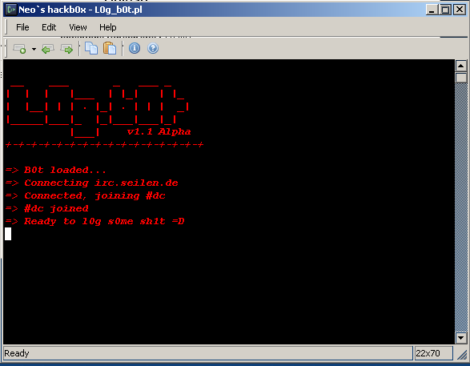
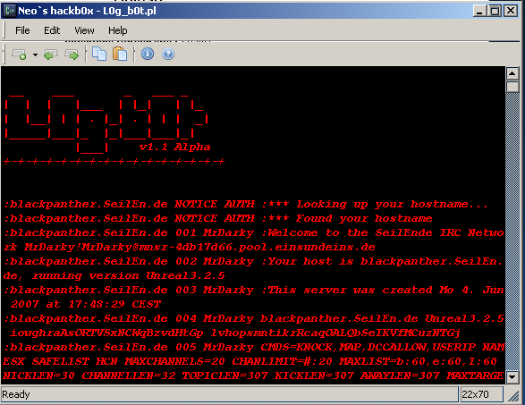

[+]Topic: Code
[+]Von: Neo2k8
[+]Return: Code
 
#!/usr/bin/perl -w
###################
#
# Little IRc Bot
# to Log some shit
#
#
# written by Neo2k8
#
####################
use strict;
use warnings;
use IO::Socket;
my $version = "v1.1 Alpha";
my @logo =("
__ ___ _ ___ _
| | | |___ | |_| | |_
| |__| | | . |_| . | | | _|
|_____|___|_ |_|___|___|_|
|___| $version
+-+-+-+-+-+-+-+-+-+-+-+-+-+-+-+
");
system(clear);
system(cls);
print "@logo","\n";
print "=> B0t loaded...","\n";
if(!-e "config.txt")
{
&error;
sub error
{
system(clear);
system(cls);
print "@logo","\n";
print "=> Config.txt nicht gefunden.","\n\n";
print "=> [1]: Config erstellen","\n";
print "=> [x]: Exit B0t","\n";
print "=> Eingabe : ";
chomp(my $in = <STDIN>);
if($in eq "1")
{
&new_conf;
}
elsif($in eq "x" or $in eq "X")
{
exit;
}
else
{
&error;
}
}
}
&connect;
sub new_conf
{
system(clear);
system(cls);
print "@logo","\n\n";
print "Irc Server :";
chomp(my $conf_server = <STDIN>);
print "Irc Port [ default : 6667 ]:";
chomp(my $conf_port = <STDIN>);
print "Irc Channel :";
chomp(my $conf_channel = <STDIN>);
print "Irc B0tNick [ default : L0g_b0t ]:";
chomp(my $conf_nick = <STDIN>);
open(WRITE,'>',"config.txt") or die "Cannot write config.txt :(";
print WRITE "$conf_server","\n";
print WRITE "$conf_port","\n";
print WRITE "$conf_channel","\n";
print WRITE "$conf_nick","\n";
close(WRITE);
system(clear);
system(cls);
print "@logo","\n";
print "Bitte B0t neustarten...","\n";
exit;
}
sub connect
{ # &connect begin
open(READ,'<',"config.txt")or die "Cannot read config.txt :(";
chomp(my $server = <READ>);
chomp(my $port = <READ>);
chomp(my $channel = <READ>);
chomp(my $nick = <READ>);
close(READ);
print "=> Connecting $server","\n";
my $sock = new IO::Socket::INET(PeerAddr => $server,
PeerPort => $port,
Proto => 'tcp' ) or die "Can`t connect to $server on Port $port\n";
print "=> Connected, joining $channel","\n";
print $sock "NICK $nick\r\n";
print $sock "USER $nick 1 1 1 1\r\n";
print $sock "JOIN $channel\r\n";
print "=> $channel joined","\n";
print "=> Ready to l0g s0me sh1t =D ","\n";
my $time = localtime();
open(LOG,'>',"$channel.txt") or die "Cannot write Log :(";
print LOG "----------------------------------------------------------------","\n";
print LOG " Created with L0g.b0t $version on $time ","\n";
print LOG "----------------------------------------------------------------","\n\n\n";
close(LOG);
sleep(3);
system(clear);
system(cls);
print "@logo","\n\n";
while(my $input = <$sock>)
{ # while begin
chomp($input);
if ( $input =~ /^PING(.*)$/i)# Ping Pong
{
print $sock "PONG $1\r\n";
}
else
{
print "$input","\n";
}
if ($input =~ /\ PRIVMSG $channel/i)
{ # if start
open(LOG,'>>',"$channel.txt") or die "Cannot write Log :(";
my ($name, $text) = ('', '');
if( $input=~/^:(\w+)!.+?:(.+)$/i )
{
($name, $text) = ($1, $2);
}
print LOG "<$name> ","$text","\n";
} # if end
close(LOG);
if($input =~ /\::quit/i)
{
close(LOG);
print $sock "QUIT\r\n";
}
} # while end
}# &connect end